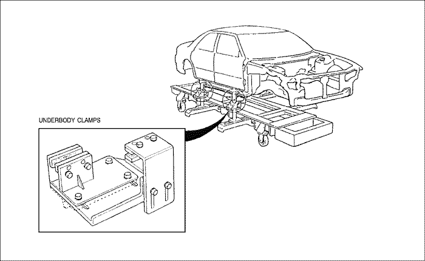
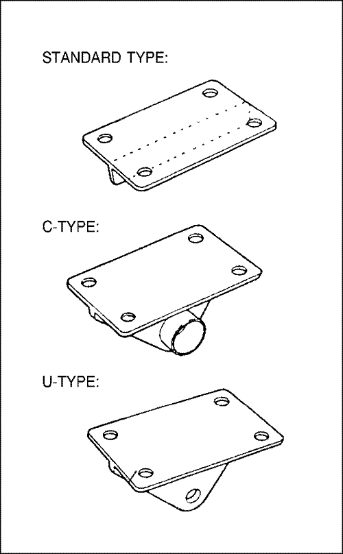
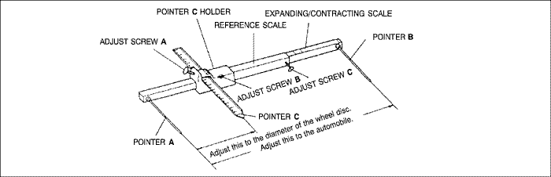
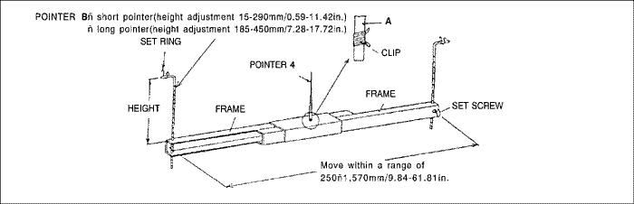
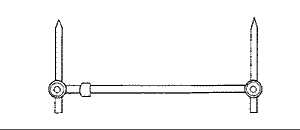

MEDIDAS PREPARATORIAS PARA EL TRABAJO DE CARROCERÍA
DESCRIPCIÓN GENERAL
- La mayoría de las carrocerías monocasco están compuestas por una unidad simple que se logra al soldar piezas prensadas fabricadas con planchas de acero de diferentes formas y tamaños. Cada pieza tiene asignada un cierto grado de resistencia y durabilidad para que desempeñe su papel y lograr, como conjunto las características de la carrocería.
- Los daños a la parte exterior de la carrocería pueden inspeccionarse visualmente, pero en el lugar de un impacto externo, será necesario controlar la extensión del daño producido. En algunos casos, la deformación se extiende más allá de las zonas propias afectadas por la colisión y por ello deben controlarse con precisión.
| CARROCERÍA DE TRES CUERPOS | Unidad: mm (pul.) |
| PORTÓN TRASERO | Unidad: mm (pul.) |
| VAGONETA DE ESTACIÓN | Unidad: mm (pul.) |
PUNTOS DE CONTROL
- Inspección detalla de piezas dañadas (visual)
Cinturones de seguridad
Sustituya siempre el cinturón de seguridad si:
- El material del cinturón aparece cortado, pinchado, quemado o dañado de cualquier otro modo.
- El tensor o el retractor no funcionan adecuadamente.
- Estaban desgastados en el momento de la colisión (comprobar también daños en los puntos de anclaje del cinturón de seguridad).
- Su estado es cuestionable.
Sección delantera :
- ¿Existe algún doblez, división, mella u otro daño en la suspensión o piezas relacionadas?
- ¿Existe alguna deformación en el panel delantero o el travesaño del radiador? ¿Se han separado algunas de las secciones conectadas?
- ¿Existen pliegues o distorsiones en el alojamiento de rueda delantera o en al bastidor lateral? ¿Se han separado algunas de las secciones conectadas?
- ¿Existe algún doblez o retorcimiento de toda la zona delantera?
- ¿Existe alguna deformación como, pliegues, abombamiento, o mellas en el pilar delantero, el panel del salpicadero, el piso, etc?
- ¿Existe algún retorcimiento vertical o desalineación en la puerta?
- ¿Está rota la junta del parabrisas?
- ¿Existe alguna deformación cerca de la parte superior del pilar central del panel del techo?
- ¿Existe algún daño en el interior del automóvil (existe algún retorcimiento del panel del salpicadero, o algo irregular en lo referente a las distancias de seguridad o piezas de montaje por planchas)?
- ¿Existe algún daño en el volante de dirección? ¿Existe alguna deformación en la columna o las piezas montadas en la misma?
- ¿Existe alguna fuga de aceite o agua o daños en el motor, transmisión o frenos?
- ¿Existe algún ruido extraño al cambiar de velocidad, en el motor o el giro de la transmisión?
- ¿Existe algún indicio de contacto entre el bloque del motor y el travesaño central?
- ¿Existe algún daño a las líneas de freno o combustible, o a los cables de conexión?
Sección trasera :
- ¿Existe algún retorcimiento, combadura o mella del piso trasero o de algún travesaño trasero? ¿Se han separado algunas de las secciones conectadas?
- ¿Existe alguna combadura irregular o mella en el guardabarros trasero?
- ¿Existe alguna distorsión en el panel interior trasero? ¿Existe algún doblez o mella en las cercanías del pilar trasero?
- ¿Existe alguna distorsión o pliegue en el alojamiento de rueda trasera o secciones del arco? ¿Se han separado algunas de las secciones conectadas?
- ¿Existe algo irregular en la distancia de seguridad de la luneta trasera?
- ¿Existe algún retorcimiento o desalineación de la distancia de seguridad de la sección de apertura de la tapa de maletero?
- ¿Existe algún doblez, división, mella u otro daño en la suspensión o piezas relacionadas?
- ¿Existe alguna deformación del travesaño del piso trasero, panel del piso del maletero o panel trasero? ¿Se han separado algunas de las secciones conectadas?
Viga de impacto :
Sustituya siempre el conjunto de puerta si:
- La fuerza externa hace que la viga de impacto del interior de la puerta se deforme.
- Sustituya siempre la viga de impacto si :
- La fuerza externa hizo que se deformara la viga de impacto del parachoques delantero y trasero.
CORRECCIÓN DEL AREA DAÑADA
- Coloque el corrector del bastidor en la carrocería del vehículo.
- Está permitido volver a dar forma al bastidor lateral tirando del mismo.
- Utilice las soldaduras de contracción horizontal para anclar el coche.




- Aplique carga a las sección dañada y tire hasta que la sección quede casi restaurada a su forma original.
Especificaciones de sujeción del chasis inferior
| . | Tipo estándar | Tipo C | Tipo U |
| Conectores de bastidor . | - Dataliner
- Car-o-liner
- Celette
- Flex-o-liner
- etc.
| | |
SISTEMAS DE MEDICIÓN (SIN DAÑOS MENORES)
- Siempre que sea posible, juzgue y base las conclusiones en las mediciones. Mida la alineación de la rueda (consulte páginas 2-2, 2-3) para evitar problemas posteriores como un desgaste asimétrico de los neumáticos o engarrotamiento del volante de dirección.
- Si hubiera alguna desviación, utilice un calibre de línea paralelas y mida las parte de la carrocería. (A continuación en la figura 5-1)
- Si existe algún retorcimiento de la carrocería, mida usando un calibre de centrado del bastidor. (A continuación en la figura 5-2)
- Cuando realice las mediciones de la carrocería, utilice un calibre de líneas paralelas universal. (A continuación en la figura 5-3)



Figura 6